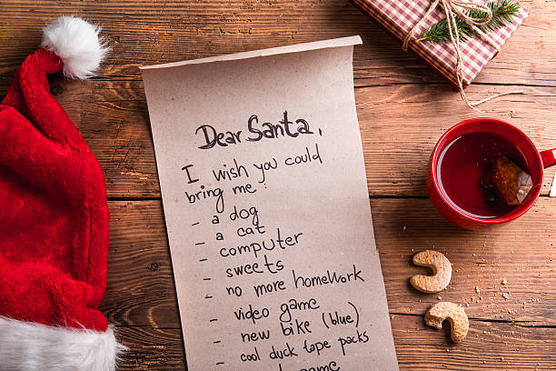

With the holiday’s coming up, I am struggling to brainstorm ideas for Christmas presents. I decided to ask ChatGPT to create a Christmas list for a 20-year-old to see how insightful the recommendations would be. Since one of my previous blog posts showed that AI can help plan things like grocery lists and menus, I wanted to see if it could also create a Christmas list with different constraints.
This is how my conversation with ChatGPT went:
USER
Generate a Christmas list for a 20-year-old
ASSISTANT
Creating a Christmas list for a 20-year-old can be fun and varied, considering the broad range of interests typical of someone in this age group. Here’s a list of potential gift ideas across different categories:
- Tech Gadgets:
- Wireless earbuds or headphones
- Portable Bluetooth speaker
- Smartwatch or fitness tracker
- Phone accessories (case, screen protector, charging dock)
- Tablet or e-reader
- Fashion & Accessories:
- Stylish backpack or tote bag
- Trendy sneakers or shoes
- Cozy sweaters or hoodies
- Watch or jewelry
- Beanie, scarf, or gloves set
- Hobbies & Interests:
- Art supplies like sketchbooks, markers, paints
- Musical instrument or accessories (like a guitar pedal or strap)
- Cookbook or cooking class for food enthusiasts
- Gaming console or popular video game
- Subscription to a streaming service or online platform
- Health & Wellness:
- Personalized water bottle or gym gear
- At-home fitness equipment (like resistance bands or yoga mat)
- Skincare or grooming set
- Essential oil diffuser with a set of oils
- Spa day gift certificate or DIY spa kit
- Books & Educational Things:
- Latest bestseller or classic novel
- Non-fiction book based on their interests
- Online course subscription or class
- Journal or planner for the upcoming year
- Magazine subscription
- Experiences & Memberships:
- Concert or event tickets
- Travel accessories or gift card for airline/hotel
- Membership to a local museum or gallery
- Escape room or adventure experience tickets
- Food or wine tasting tour
- Home & Personal Space:
- Cozy throw blanket or decorative pillows
- Scented candles or unique fragrance diffusers
- Indoor plants or a plant care kit
- Coffee maker or selection of gourmet coffee/tea
- Personalized photo album or wall art
- Fun & Quirky:
- Board game or puzzle
- DIY craft kit
- Fun socks or novelty clothing items
- Personalized phone case or laptop stickers
- Funky LED lights for room decor
Remember, the best gifts often show thought and consideration for the person’s unique tastes and interests. A heartfelt note or card can also add a special touch to any gift.
USER
The budget is $100
ASSISTANT
With a budget of $100, you can still find some great gifts that are both thoughtful and cherished. Here’s a revised list focusing on affordable options:
- Tech Gadgets:
- Wireless Earbuds: Many brands offer budget-friendly but good-quality options that enhance a music lover’s experience.
- Portable Bluetooth Speaker: Compact speakers are perfect for someone who loves to share music wherever they go.
- Fashion & Accessories:
- Stylish Backpack: Look for versatile designs that can work for school, work, or outings.
- Trendy Sneakers: Consider brands or styles that are popular yet affordable.
- Warm Accessories Set: A matching set of a beanie, scarf, and gloves can be both practical and stylish.
- Hobbies & Interests:
- Art Supplies Kit: A set that includes sketchbooks, markers, or paints can be great for artists.
- Subscription Box: A one-time subscription to something like snacks around the world or a book club can be exciting.
- Health & Wellness:
- Fitness Gear: Resistance bands or a yoga mat are great for someone who enjoys staying active.
- Skincare Kit: Look for sets that include essentials like cleansers and moisturizers, suitable for their skin type.
- Books & Educational:
- A Bestselling Book: Choose a book from a favorite genre or a new release they’re excited about.
- Journal or Planner: A high-quality, well-designed planner can help them organize their year.
- Experiences:
- Concert or Event Tickets: Check for local events or shows that fit within the budget.
- Escape Room Experience: Many places offer per-person pricing that could fit your budget.
- Home & Personal Space:
- Scented Candle Set: Opt for a duo or trio of their favorite fragrance styles.
- Indoor Plant: Small, beginner-friendly plants like succulents or pothos are great options.
- Fun & Quirky:
- Board Game or Puzzle: Find something that’s fun for game nights with friends.
- DIY Craft Kit: Kits for making things like candles, bath bombs, or even small woodworking projects can be both fun and relaxing.
Regardless of what you choose, make sure to consider any specific tastes or needs the recipient might have to make the gift more personal. A heartfelt note will also add a lot of value to any gift, showing your thoughtfulness and care.
USER
Tailor this list to a 20-year-old male college student
ASSISTANT
Crafting a Christmas list for a 20-year-old male college student can focus on practicality, entertainment, and personal interests. Here’s a refined list with a $100 budget in mind:
- Tech Gadgets:
- Wireless Earbuds: Opt for affordable brands that are reliable for both studying and leisure.
- Portable Bluetooth Speaker: Great for dorm use or outdoor gatherings.
- Fashion & Accessories:
- Backpack: Look for a durable and stylish bag that fits laptops and books.
- Casual Sneakers: Pick a versatile style that can be worn daily on campus.
- Baseball Cap or Beanie: A simple accessory that adds to casual outfits.
- Hobbies & Interests:
- Gaming Accessories: A new controller, gaming mouse, or a comfortable mouse pad.
- Popular Video Game: Check for sales or popular titles that fit within the budget.
- Netflix or Spotify Subscription: A prepaid card for music or streaming services.
- Health & Wellness:
- Fitness Gear: Resistance bands or a set of portable dumbbells for dorm workouts.
- Water Bottle: A high-quality, spill-proof bottle to use throughout the day.
- Books & Educational:
- Inspirational or Career-Related Book: Something that aligns with his major or career aspirations.
- Journal or Planner: An efficient way to organize studies and deadlines.
- Experiences:
- Sports Event Tickets: Look for local college games or nearby minor league teams.
- Local Entertainment Gift Card: Consider a movie theater or entertainment venue near campus.
- Home & Personal Space:
- Desk Lamp with USB Ports: A practical item for late-night study sessions.
- Poster or Wall Art: Something that reflects his interests or favorite shows/movies.
- Fun & Quirky:
- Board Game or Card Game: Ideal for game nights with friends in the dorm.
- DIY Craft Kit: Options like model building or paint-by-number for relaxation during study breaks.
These options aim to balance practicality with personal enjoyment, making campus life enjoyable and manageable. Adding a personal touch, like a note or small stocking-stuffer, can make your gift even more meaningful.
Reflection
This was a fun conversation with AI! It was able to generate a full Christmas list that stayed within the $100 budget while still offering a range of thoughtful and useful gifts. However, I did wish that the AI would provide the actual price of the different suggestions. The list felt realistic for an actual college student. I also thought the suggestions were creative, since they included things like dorm-friendly tech, hobby-based items, and even experience ideas like sports tickets. This list even inspired me to add some of these items onto my Christm